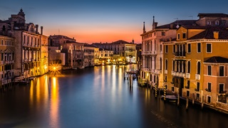
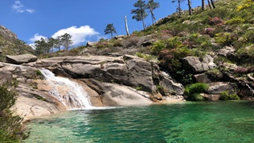
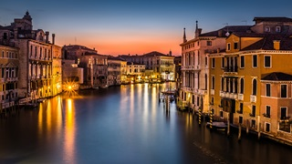
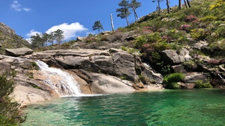

Bem vindos
Bem vindos ao Mundo dos Roteiros.
Nesta pagina vou adicionar vários tipos de roteiros.
Roteiros disponiveis:
-
Madeira
-
Tailândia
-
Itália
-
Gêres
A Madeira, uma ilha pertencente a Portugal, é um destino vulcânico no oceano Atlântico conhecido como a 'Pérola do Atlântico'. As suas paisagens montanhosas, florestas exuberantes e clima subtropical atraem turistas ao longo de todo o ano. A ilha oferece atividades ao ar livre, como caminhadas pelas levadas e observação de baleias, destacando-se também pelos famosos vinhos Madeira. A sua rica herança cultural inclui festivais tradicionais, artesanato local e música folclórica.
A Tailândia, localizada no sudeste asiático, é conhecida pela sua beleza natural deslumbrante e pela sua rica cultura. Este país fascinante oferece uma variedade de experiências únicas, desde praias paradisíacas e ilhas exóticas até templos magníficos e cidades vibrantes. Bangkok, a capital, é uma metrópole movimentada, repleta de mercados animados, comida de rua deliciosa e vida noturna agitada. Além disso, a Tailândia é famosa pela sua culinária aromática e picante, massagens tradicionais tailandesas e festivais coloridos que celebram a sua história e tradições.
A Itália, situada no sul da Europa, é um país conhecido pela sua rica história, arte e cultura. Berço do Império Romano e lar de renomados artistas, escritores e pensadores, a Itália é um destino que combina magníficas paisagens, cidades históricas e uma gastronomia excecional. As suas cidades icónicas, como Roma, Florença, Veneza e Milão, são tesouros de arquitetura, arte e história, enquanto as suas regiões rurais encantadoras oferecem vinícolas pitorescas, vilas medievais e paisagens deslumbrantes. A culinária italiana, com a sua pasta, pizza, gelato e vinhos, é mundialmente famosa e faz parte integrante da experiência italiana, celebrando a rica tradição gastronômica do país.
O Parque Nacional da Peneda-Gerês, em Portugal, é um paraíso natural com montanhas majestosas, vales verdejantes e cascatas refrescantes. Além da beleza natural, o Gerês abriga aldeias históricas e vestígios romanos. Os visitantes podem desfrutar de caminhadas, banhos em lagoas e atividades ao ar livre. A gastronomia local oferece pratos tradicionais e vinhos verdes. Com uma variedade de acomodações, o Gerês é um destino encantador para relaxar e se aventurar.
Entre em Contato
Estamos sempre abertos a feedback, perguntas e sugestões. Não hesite em contatar-nos.
 


